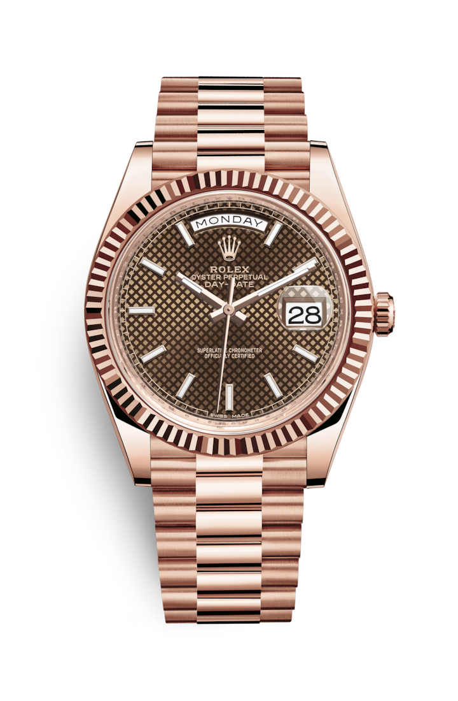

"Характеристика модели"
Золото Еverose
Чтобы красота часов из розового золота не меркла со временем, компания Rolex создала и запатентовала особенный сплав 18‑каратного розового золота, изготавливаемый в ее собственном литейном цехе: золото Everose. Это 18‑каратное золото, изобретенное в 2005 году, используется в моделях Rolex из розового золота.
Циферблат цвета шоколада
По циферблату легко узнать часы Rolex. Он отражает стилистику бренда и обеспечивает отличную читаемость показаний. Отметки на всех циферблатах Rolex изготавливают из 18‑каратного золота, благодаря чему они не тускнеют со временем. Каждый циферблат Rolex разрабатывается и изготавливается в стенах компании, причем большая часть операций выполняется вручную, с тем чтобы добиться максимального совершенства.
Браслет President
Разработка, изготовление и тестирование браслетов и застежек Rolex невозможны без передовых высоких технологий. Как и в случае любых других составляющих часов, визуальный контроль, осуществляемый мастером, гарантирует их безупречный внешний вид. Браслет President с полукруглыми трехрядными звеньями был создан в 1956 году к выходу престижной модели Oyster Perpetual Day‑Date. Этот изысканный и удобный браслет изготавливается только из тщательно отобранных образцов драгоценных металлов.
Механизм 3255
Модель Day‑Date 40 оснащена механизмом нового поколения: калибром 3255, полностью разработанным и изготовленным Rolex для максимального улучшения характеристик часов. Представляя собой квинтэссенцию передовых технологий Rolex в часовом искусстве, этот механизм с автоматическим подзаводом отмечен 14 патентами, что наделяет его существенными преимуществами по таким параметрам, как точность, автономность, ударопрочность, устойчивость к магнитным полям, удобство в использовании и надежность.
"Полное описание модели"
В 1956 году состоялся дебют часов Rolex Day‑Date.Представленные только в версиях из 18-каратного золота или платины,они стали первыми наручными часами,которые показывали на циферблате дату вместе с полным названием дня недели. Благодаря специально разработанному браслету President часы Day-Date остаются эталоном для влиятельных людей мира.
|